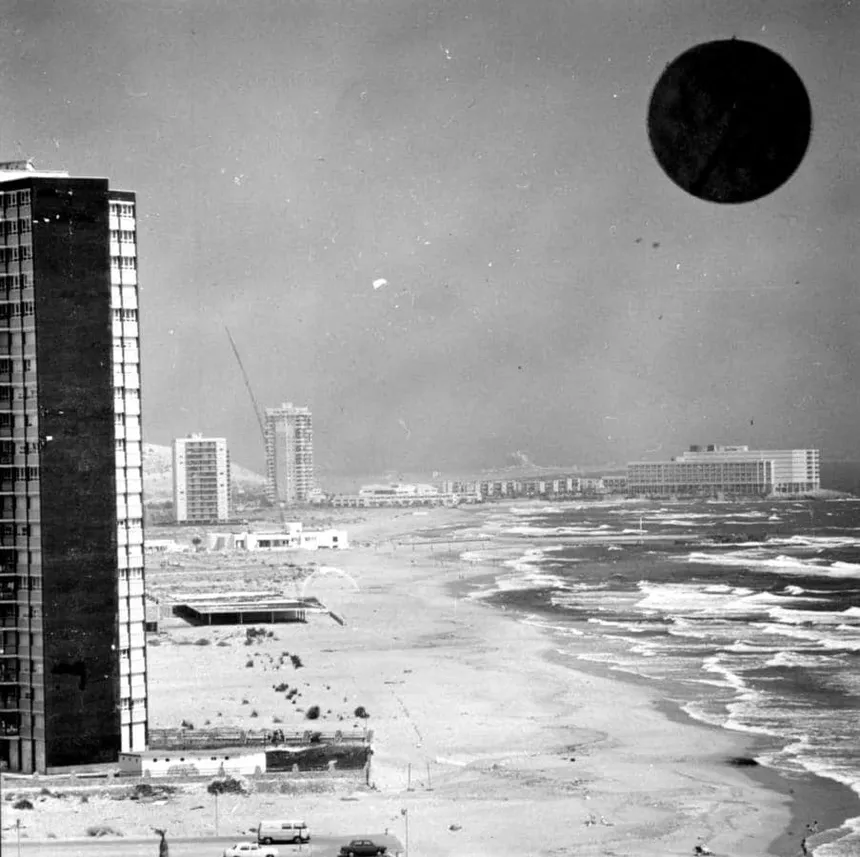
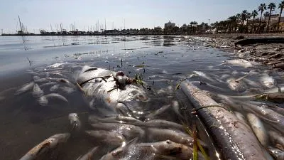

El Mar Menor antes y después
A continuación, vamos a mostrar unas fotos del antes y el después del Mar Menor y como las acciones humanas y las infraestructuras han afectado a su repentino cambio:
Mar Menor hace 50 años:
Mar menor en la actualidad:
